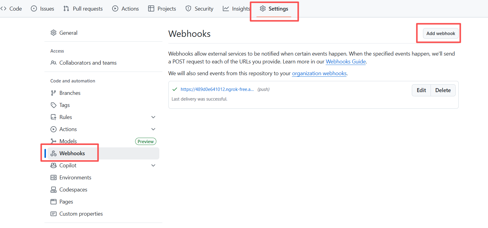
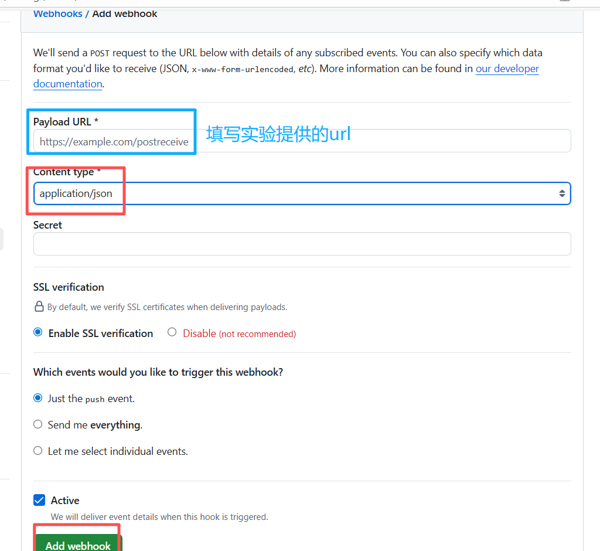

本作业旨在帮助你熟悉编程环境、提交流程以及基本的 PyTorch 编程。通过完成它，你将确保开发环境配置正确，理解如何提交未来的作业，并加强 PyTorch 编程技能。
实验获取与分发
由于 GitHub Classroom 已停止为本学期的新账号提供服务，本学期不再使用 GitHub Classroom 邀请链接分发实验。我们会为每个学生创建自己的实验仓库，并给你发送邀请链接邮件（github绑定的邮箱），请注意查收，如有权限问题或者邮件缺失，请私信助教。
请按以下流程获取实验：
- 接受邀请后，将自己的私有仓库克隆到本地，并在该仓库中完成实验。例如：
1
2git clone <你的作业仓库地址>
cd <你的作业仓库目录> - 请在自己仓库的
main分支完成作业，并通过git commit和git push提交。
下面的环境配置、调试、提交和自动测试流程保持不变。
Environment Setup
Option 1: Local Setup
- Python: 3.10 或更高版本
- Packages: 推荐通过以下命令安装所有必要的依赖项：
1
pip install -r requirements.txt
- Optional: 建议使用 Nvidia GPU 并安装 CUDA 12.0 或更高版本 ，否则某些功能可能无法正常运行（我们会尽最大努力确保硬件差异不会影响你的评分）。
注意：不同作业的 requirements.txt 可能略有差异
Option 2: Docker Setup
强烈建议使用来自 Nvidia PyTorch Release 的 Docker 镜像（例如 23.10 或更新的版本）作为基础环境，以避免依赖冲突。
Code and Debug
Coding
所有完成 Tasks 所需的文件都位于 src/ 目录下，该目录是唯一会被作为 Python 模块导入的目录。因此，你需要注意以下几点：
__init__.py文件对于 Python 模块来说是必不可少的，我们已经在src/中为你初始化好了所有必要的__init__.py文件，因此如果你出于个人目的需要修改它们，请务必小心。- 如果你有其他需要在模块内部导入的文件（例如
utils.py），请确保它们也都放在src/目录下，并使用相对导入方式，例如：from .utils import *，from .common.utils import ...等。
TODO: Task A0
A0 的任务很简单，不需要你进行任何 coding，我们提供了一个 demo，用来帮助你测试本地环境、测试提交流程以及熟悉 PyTorch 编程。接下来，以 demo 为例，主要介绍：
- 理解神经网络中反向传播（Backward）的基本原理。
- 实现一个线性层 ManualLinear 并手动计算梯度。
- 比较 PyTorch 自动求导机制与手动计算的一致性。
我们模拟的是一个最基本的线性变换 $\mathbf{Y} = \mathbf{X} \times \mathbf{W}$，其中：
- $\mathbf{X} \in \mathbb{R}^{B \times H \times D}$：输入张量，可以理解为批次、序列、特征维度；
- $\mathbf{W} \in \mathbb{R}^{D \times E}$：权重矩阵；
- $\mathbf{Y} \in \mathbb{R}^{B \times H \times E}$：输出张量。
我们进一步定义一个标量损失函数 loss = (Y ** 2).sum()，即：
进一步，完整的 forward 过程即：
我们首先给出对应的 backward 的计算过程：
最终，demo 中模拟实现的 ManualLinear 如下：1
2
3
4
5
6
7
8
9
10
11
12
13
14
15
16
17
18
19
20
21
22
23
24
25
26
27
28
29
30
31class ManualLinear:
def __init__(self, in_dim, out_dim, device=None, dtype=torch.float32):
self.W = torch.randn(in_dim, out_dim, device=device, dtype=dtype, requires_grad=False)
self.W_grad = torch.zeros_like(self.W)
def forward(self, x):
self.input = x
# [b,h,d] @ [d,e] -> [b,h,e]
return x @ self.W
def backward(self, grad_output):
# grad_output: [b, h, e]
# dL/dW = X^T @ grad_output
b, h, d = self.input.shape
# [b,h,d] -> [b*h, d]
x_flat = self.input.reshape(-1, d)
# [b,h,e] -> [b*h, e]
grad_out_flat = grad_output.reshape(-1, self.W.shape[1])
# [d, b*h] @ [b*h, e] -> [d, e]
self.W_grad = x_flat.T @ grad_out_flat
# dL/dx = grad_output @ W^T
# [b,h,e] @ [e,d] -> [b,h,d]
grad_input = grad_output @ self.W.T
return grad_input
# ========== Manual ==========
manual_linear = ManualLinear(d, e, device=device, dtype=dtype)
y_manual = manual_linear.forward(x)
loss_manual = y_manual.pow(2).sum()
grad_output = 2 * y_manual
grad_input_manual = manual_linear.backward(grad_output)
接下来，我们简要解释 ManualLinear 中反向传播对于输入梯度和权重梯度的计算推导。对于矩阵求导，其本质仍然是实矩阵函数 $\mathbf{F}$ 中的每个 $f$ 分别对矩阵变元 $\mathbf{X}$ 中的每个变量 $x$ 逐个求偏导，只是需要组织成向量、矩阵的形式。假设 $\mathbf{F}$ 中有 $m$ 个 $f$，变元中有 $n$ 个元素，那么，每个 $f$ 对变元中的每个元素逐个求偏导后，一共会产生 $m \times n$ 个结果。不严谨地，从直观上看：
- 如果分子是列向量形式，分母是行向量形式，矩阵求导的结果组织成分子布局：
- 如果分子是行向量形式，分母是列向量形式，矩阵求导的结果组织成分母布局：
从结果看，两种布局只相差一个转置操作。实际上，分子布局和分母布局只是讨论矩阵求导中约定俗成的概念，并没有教材进行严格定义，所以请大家自行查阅相关资料更进一步地理解。这里介绍矩阵求导的布局，主要原因是涉及到深度学习框架自动求导算法的实现，影响最终梯度张量的 shape。理论上对于自动求导算法，分子布局和分母布局都可以使用，只要计算图遵循统一的约定并在实现中自洽即可。但在实际的深度学习工程中，几乎所有主流框架（如 PyTorch、TensorFlow、JAX）都采用分母布局（梯度矩阵形式），即梯度张量的 shape 总是和变量（输入）保持一致，在工程上非常自然、直观。
在约定好求导的布局后。我们就可以引入关于矩阵求导的数学推导。常见的矩阵求导方法主要包括：
- 定义法：直接根据矩阵求导定义展开，将每个元素的导数显式列出。这种方法最为直观，但操作繁琐，通常只用于教学或验证小型表达式。
- 微分法：利用微分符号 $dX, dY$ 建立关系，从中提取导数结构。
- 迹技巧：通过将矩阵函数转化为 $\mathrm{tr}(A^\top B)$ 等形式，借助求导规则间接推导结果。
关于矩阵求导的数学推导请大家自行查阅学习相关资料，我们在这里不进行详细展开。因为在工程中，我们往往不会显示构造一个矩阵对矩阵求导的完整梯度矩阵（或 Jacobian 矩阵）。一方面，我们只关心损失函数对参数矩阵的导数结果，并不需要中间层变量的完整梯度；另一方面，当考虑一个 $\mathbb{R}^{m \times n}$ 的矩阵对一个 $\mathbb{R}^{p \times q}$ 的矩阵求导的结果，实际会得到一个四阶张量 $(m,n,p,q)$，那如果继续对另外一个高阶张量求导，情况会更加复杂。实际工程中，我们很难去描述任意阶的张量矩阵，因此在实践中不会显式构造完整的梯度矩阵。
对于 demo 中的例子，为了得到 $\frac{\partial \text{Loss}}{\partial \mathbf{X}}$ 和 $\frac{\partial \text{Loss}}{\partial \mathbf{W}}$，我们通常依赖结构化的链式法则，即在计算图中从后向前地传播梯度，计算图中的每个节点（算子）都实现了其对输入变量的局部导数，反向传播时，节点得到来自下一层的“上游梯度”（即 Loss 对其输出的梯度），并与自身的局部梯度进行链式组合（如矩阵乘），从而计算出 Loss 对其输入的梯度，并继续传播。例如：
对于 ManualLinear backward，其上游梯度即 $\text{grad_output} = \frac{\partial \text{Loss}}{\partial \mathbf{Y}} = 2 \mathbf{Y}$，局部导数推导：
对于 $\frac{\partial \mathbf{Y}}{\partial \mathbf{X}}$：
对任意样本 $(i,j,:)$，有：
由此，我们得到局部导数形式：
对于 $\frac{\partial \mathbf{Y}}{\partial \mathbf{W}}$：
首先，考虑单个样本 $ \mathbf{X}_i $ 的
forward计算，有：$\mathbf{y} = \mathbf{x} \times \mathbf{W}$，如果把 b 理解成 batch，那 $\mathbf{W}$ 对不同样本共享权重。同样：其中，$\text{Loss}^{(i)}$ 可以理解为第 $i$ 个样本对于最终损失的贡献。最后，考虑 batch 个样本，根据链式法则组合，有：
由此，我们得到局部导数形式：
注意: 这里的推导并不符合数学上严谨推导，局部导数形式中的“=”并不严格等于，含义是该局部导数在结构上应该这样表示，并没有构造中间变量的完整梯度矩阵，主要用于帮助理解。
至此，我们不严谨地解释了 ManualLinear backward 的计算过程，至于上游梯度和局部导数如何组合，完全是按照分母布局的形式，即梯度 shape 保持与变量（输入）一致。
Debugging
以下内容用于帮助你调试和 debug：
Naive Debug Mode
- 我们会在
test_toy.py中提供一些带有明确答案的测试用例，这对你是可见的。 - 建议在提交前，先在自己的机器上确保代码正确运行，可以使用以下命令进行测试：
1
pytest test_toy.py
- 你可以根据自己的调试需求自由修改
test_toy.py文件，我们不会使用它（以及下面提到的test_with_ref.py）来为你的代码打分。
Deep Debug Mode
- 根据
test_toy.py，我们提供了另一个测试文件test_with_ref.py，其中会导入一个闭源的参考包 ref（结构与 src 相同，例如from ref import ...，from ref.modeling import ...）。因此，你可以在基础的 toy 测试之外，自行创建测试用例，并与参考实现进行比较。 - 我们提供
a_env_light_v{y}.tar（基于 Ubuntu）的 Docker 镜像 tar 文件，已传到到 NJU Box（链接会在群公告中展示），你可以下载到你的环境中使用。 - 然后按照下面的示例命令一步一步操作：
1
2
3
4
5
6
7
8
9
10
11# step0. assumming that the tar file "a_env_light_v{y}.tar" is already downloaded into your private repo
# step1. run the given script to load the docker image (default the light one) and execute the container
bash run_docker.sh # or maybe you need run it with sudo
#this script assume that your machine has an avaliable nvidia gpu.If not,you should to change the option in it ,and change the fixed device in test_with_ref.py.
# step2. get into the repo path mounted into the container
cd a{x}_repo
# step3. run the test_with_ref.py
pytest test_with_ref.py - 对于 Windows，如果你已经安装了 Docker，可以从
run_docker.sh中提取核心的 Docker 命令并自行运行；或者你也可以使用一些技巧，比如 WSL 或 DinD，来模拟类 Unix 的环境。
注意: test_toy.py 和 test_with_ref.py 中的测试仅用于调试目的，它们可能并不代表我们在评分时使用的 test_score.py 中的实际测试用例。因此，请特别注意处理不同情况，尤其是一些 edge cases。
Submission
- 你需要通过
git commit和git push将作业提交到该私有仓库的main分支，包含作业要求的指定源文件，并确保在 hard deadline 之前完成提交，否则 逾期作业将被自动拒收。 - 尽量 不要推送不必要的文件，尤其是像图片这样的大文件到仓库中。
- 如果你因为一些特殊问题错过了截止时间，请直接联系老师（见 Contact）。
我们提供了自动测试服务，但需要你在自己的作业仓库中更改一些设置。
首先：

然后：

按照上图操作，对应的 url 我们会在群公告中给出，注意查收。完成该操作后，当你进行 git push 时，我们的测试机器会自动完成测试，并创建 score-feedback 分支返回你的分数，这可能会消耗一定时间，随实验难度不确定，请耐心等待，如果出现问题，请寻求助教的帮助。
每次测试后，我们会提供 score feedback（见 Feedback 部分），以便你在 ddl 之前改进代码，争取更高的分数。
Scoring
每个作业将根据评分范围 0~100 分进行评定。我们会下载你的代码，并通过运行 test_script.sh 脚本来执行 test_score.py 文件（该文件对你来说是不可见的空文件），在我们的本地机器上导入 Tasks 中指定的文件并运行一些测试用例。
- 如果你在可选时间限制（optional time limit）内通过了所有测试，你将获得最高分 100 分。
- 如果你在可选时间限制内未通过任何测试，或者程序运行出现异常，你将获得最低分 0 分。
- 如果你在可选时间限制内只通过了部分测试，则你将获得介于 0~100 分 之间的分数，该分数是你通过的所有测试用例所对应分值的总和，具体得分标准见下表。
| Test Case | Score | Other Info |
|---|---|---|
| Task0 - Case1 | 20 | |
| Task0 - Case2 | 20 | |
| Task0 - Case3 | 20 | |
| Task0 - Case4 | 20 | |
| Task0 - Case5 | 20 | |
| Total | 100 |
Feedback
在评分完成后，我们会将你的得分情况以一个表格的形式写入一个新文件 score.md 中，并通过一个新的 commit 推送到你的仓库中，分支名为 score-feedback（这是一个临时分支，仅用于让你查看每次评分后各个测试用例的得分情况，请不要将其用于其他目的）。
score.md 文件内容示例：
| Test Case | Score | Status | Error Message |
|---|---|---|---|
| Task0 - Case1 | 20 | ✅ | |
| Task0 - Case2 | 20 | ✅ | |
| Task0 - Case3 | 20 | ✅ | |
| Task0 - Case4 | 20 | ✅ | |
| Task0 - Case5 | 20 | ✅ | |
| Total | 100 | 😊 |
status icons 的含义如下:
- ✅: passed the case
- ❌: failed the case due to wrong answers
- 🕛: failed the case due to timeout if the time limit is set
- ❓: failed the case due to some exceptions (the error message will be shown at the corresponding
Error Messagecell) - 😊: all passed
- 🥺: failed at least one case
Contact
记得关注老师的 Bilibili 账号，UID 为 390606417，观看线上课程。